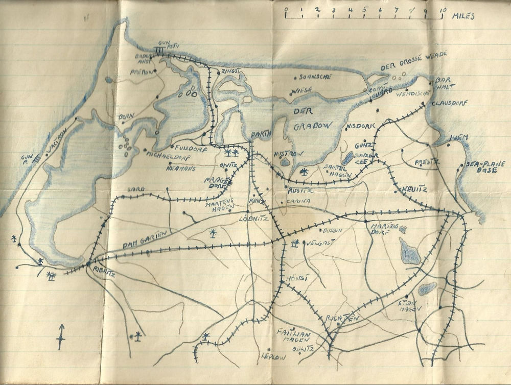

On the 15th June 1944, Flying Officer Doug Reich was on mission, flying his P-51 Mustang near Caudebec, France. But all did not go to plan. Doug hit the River Seine while evading anti-aircraft fire and was presumed lost. Against all odds he survived the crash, and was soon transported to a prisoner-of-war camp. While in the camp he drew this map of his surroundings in case he ever needed to navigate beyond the fence. On the map he noted a gun position on the western shore as well as a sea-plane base on the eastern shore. What are the coordinates of the former gunnery position and what was the name of the sea-plane base (use decimal degrees to 3 decimal places and add the base name after i.e. "51.513, -0.219 Harrow")?
